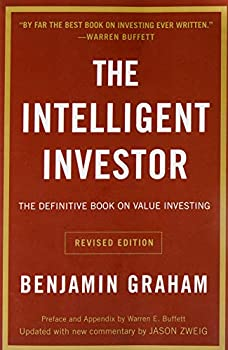

Biography
I moved from Connecticut to San Diego in February of 2020 unaware of the global pandemic approaching-great timing! Quarantine started at about one week after I moved in to my new apartment. Jobs and interviews were scarce to come by so I decided to use the time to expand my skillsets and knowledge. In this time I passed the Securities Industry Essentials exam and dramatically improved my analytical and computer programing abilities. I first started with Computer Science courses on EDx, an online learning platform, in order to get a fundamental understanding of Computer Science from an accomplished professor. MITx Computer Science in Python 1 & 2 taught by John Guttag were the first two courses I took on the topic. After completion, I furthered my knowledge in Python with a Data Science couse taught by UCSDx which introduced me to Jupityr Notebooks (among many other things). Additionally, I recieved certifications for completing Data Science: R by Harvardx which allowed me to expand into using R and introduced me to additional machine learning algorithms. From there, I was able to use R and Python in order to perform a multitude of analytical algorithms. My projects primarily relied upon large stock market data sets taken from Yahoo Finance or Kaggle.com.
During my work I began to research and learn Java, a strictly typed programming language. I found the object oriented nature of Java to be easier to interpret and debug. As a result, I have created lots of programs using Java ranging from solutions to complex theoretical math problem to a Minesweeper solving algorithm- what a throwback! The experience growing muli-faceted onject oriented programs was extremely beneficial to my overall programming skillset and I believe this experience learning different languages has made it easier and easier to pick up new ones like Javascript, HTML, and SQL.
Projects
Links on the sidebar can be used to navigate to some of my completed projects. These projects were selected to demonstrate particular skills or algorithms that are both practical and efficient. All of the projects were written by myself in a variety of languages and use datasets collected from the internet or pseudo-randomized ones. These are just a few of the projects I have done which incorporate some useful algorithms and visuals.
Fourth Down analysis was done in Python and uses multiple monte carlo experiments in order to make box-plots with the data. Monte-Carlo experiments are a broad category of programs that take lots of random samples from a large dataset in order to find mean and variation. This technique allows for easy visualization of the average outcome as well as the variability of outcomes and it forces your data into a "normal" distribution. This type of analysis is basic but extremely effective for understanding and visualizing data.
K-means Clustering is an unsupervised clustering algorithm designed to group data points into sensible groups. The demo was designed in a way to maximize understanding of the algorithm behind it. The example is very basic but it illustrates the idea of the algorithm. This tool is used to group large quantities of data into sensible groups so that you can do further analysis.
Naive Bayes algorithm is a supervised algorithm that requires "training" and the use of Bayes statistical theory. This type of program allows us to predict outcomes based on historical information. The example used in the demonstration walks through how hypothetical bank loans could be automatically approved/denied by using historical data. The program "trains" by evaluating the probability of an outcome occuring given each prior event independently. Afterwards, when it is given new data it can produce probabilities of outcomes based on the prior events.
Notable Reads
Below, I've chosen a few titles to put in a slideshow. These are topics/books that I have read recently and feel are a good representation of my interests.
1 / 7

Peak Performance-Learning and Growth- Truthfully, one of the most impactful books I have read. Initially read this nearly a decade ago and I still seem to pick it up about once a year to re-read. At this point a lot of the topics in this book have become second nature to me but there is usually some small details I can dive into further. The main thesis in this book is simply "Stress + Rest= Growth", however, the authors go into great scientific detail about how to balance that equation in order to maximize potential growth. Whether you're an athlete, musician, scientist or anything in between you will likely be able to get some insight into why some of the things you do work so well for you and why some things hold you back..
2 / 7

Intelligent Investor- Economics- The author, Benjamin Graham, was a professor, boss and mentor to Warren Buffet. Graham is considered the father of "Value Investing". He wrote this book many years ago and it has been updated just a few times by his students after his passing. The book is a perfect piece of writing on fundamental investing. It describes how Graham and many of his best students and employees invested their money. They all had a unique approach but very similar underlying principals that guided their decision-making. Those principals are all based on valuation, of course. "Buying a Dollar for 60 cents" is a good summation of the idea. But, how to come up with the dollar valuation is the true genius in the book. Sadly, in today's world this book does feel a bit incomplete without any significant discussion on behavioral economics. Regardless, this is a great read for someone who wants to get a real understanding of what your actually buying when you invest your money.
3 / 7

Basic Economics- Economics- I listened to this book on my drive from Connecticut to California back in February. Thomas Sowell exceeded all expectations I could have had for the book! He is a self proclaimed Marxist in his easrly career but later in life he substantially changes his world view because of mounting scientific evidence. This has as much information as a textbook but it was so much more relatable and easy to follow. The ideas presented in it can be counter to modern day beliefs but he does a great job of backing his thoughts with logic and scientific analysis. One of the main themes in this book is his assertion that lots of the economic theories that most people believe today have never truly been tested. Their "proof" only exists in them sounding rational and creating a confirmation bias. Additionally, people respond best to direct incentives (of course) but importantly, polititions have such perverse incentives that it almost invites inefficiency and coruption. Highly reccomended to anyone who wants a better understanding of the world arround us.
4 / 7

Spark-Health and Fitness- I found this book and "Switch" at goodwill for 1.50 a piece back in 2019. What a phenomenal deal in my opinion. I have always been a huge proponent in physical health but this book absolutely solidified my beliefs. The book uses tons of scientific research and data in order to prove that your brain and your body are so deeply connected that taking care of your body will allow your brain to function more effectively. Perhaps not a novel concept in itself but the book does a great job of making the material engaging and extremely easy to implement into your life. This is a book I wish more people in our world would read and live in agreement with.
5 / 7

Calculus-Mathmatics is always displayed as a hard science. In this book however, you can see it as a work of art gradually making progress over time. I have always been extremely drawn to the logic of math but never to the story behind it. This book details the history of great mathemations and events as well as the math behind their discoveries. Truly, I believe this type of learning would have made math more enjoyable for everyone if it was taught like this in school. The human elements along with the real world practical uses make the logic accesible and much more powerful to reader.
6 / 7

Switch-Habbits- Extremely easy to understand book on why we do the things we do. The general theme is that there are two parts of the brain; the Elephant and the Elephant rider. These are System 1, the emotional center, and System 2, the logical center. Interestingly, habits seem to live entirely in our impulsive emotional responses. They are actions that start out initially with a lot of mental effort but over time they start to become instinctual. The elephant knows what to do and the rider can't stop it even if he tried. Personally, I am a firm believer that the sum of your actions define who you are as a person. Your habits are actions you repeat consistently so your habits really begin to shape your life from a young age. I have read a few others that pair very well with this book but I definitely would reccomend this book in particular to anyone looking to start or stop particular habits
7 / 7

Never Split the Difference- Emotional Intelligence and Negotiation- Originally took a leap of faith on this after watching a YouTube video about the author. The book goes into many "techniques" that can be used when negotiating with human beings. The author's main point seems to be that humans make decisions primarily off of emotional responses and not logical ones- not much of a stretch. However, the techniques he describes are neither malicious nor overly difficult to implement and they are extremely effective. I personally found far more uses for the material than I originally imagined and I would absolutely reccomend the book if you're interested in improving your interpersonal relationship skills.